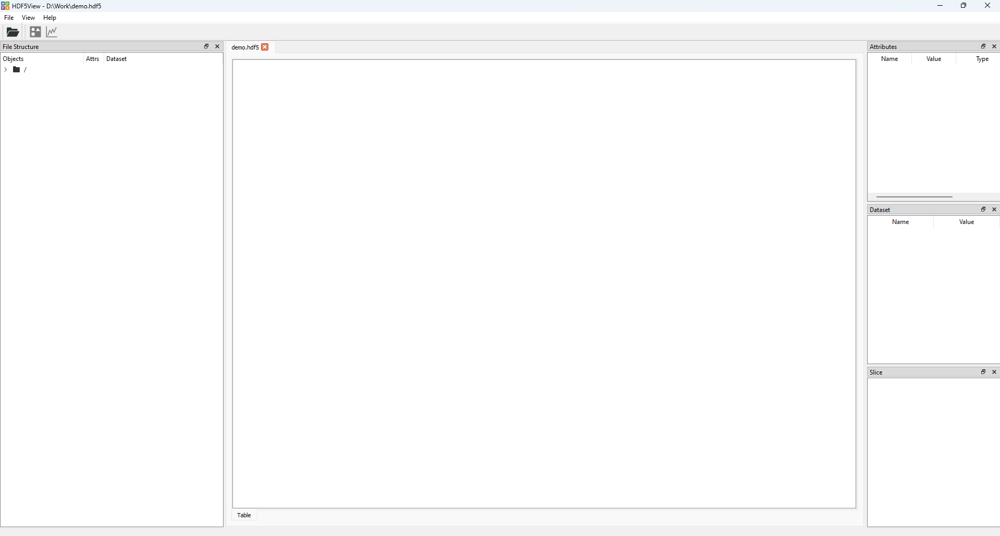

Basic Usage#
Opening an HDF5 File#
With hdf5view you can either:
Open any HDF5 file with two clicks using the context menu. To enable this, please follow the guide to Setting up the context menu.
or
Open the hdf5view application and use the
File > Openmenu to open a file or drag and drop a file onto the application window. To start the hdf5view application, double clickhdf5view.exein theScriptsfolder of your Python distribution.Tip
You can create a desktop link to
hdf5view.exein theScriptsfolder of your Python distribution for convenience. A Windows icon file hdf5view.ico is provided in the folder hdf5view/resources/images.Note
If you prefer working at the terminal, you can start the hdf5view application using
hdf5view
or you can open a file directly using
hdf5view -f <path/to/my/hdf5file>
Initial State of the Application#
Once you have opened an HDF5 file with hdf5view, the application window will look like this:
The application window contains five separate widgets:
File Structure Table#
The File Structure table (left hand side of the application), shows the structure of the open HDF5 file as a directory tree. By default it is initally at the root group and you can double-click on the folder or click the arrow to expand the tree and navigate to other groups or datasets.
The File Structure table with expanded directory structure and the dataset “3columns” selected.#
Central Tabbed Area#
The central tabbed area shows the data in a particular dataset. By default a Table tab is visible. You can add Image and Plot tabs here later.
Part of the central tabbed area showing the default Table tab. The filename is shown at the top of the tab.#
Attributes Table#
The Attributes table (right hand side, top), shows details of any attributes of the selected dataset.
The Attributes table.#
Dataset Table#
The Dataset table (right hand side, middle), shows details of the type and shape of the data at the selected dataset.
The Dataset table.#
Slice Table#
The Slice table (right hand side, bottom), shows which slice of the data is currently displayed. There are default slice values for particular dataset types and shapes in hdf5view, which are intended as a sensible starting point. You can change the slice to get a different view of the data.
The Slice table, showing the default slice for the Table tab at a 2D dataset (all rows and columns are shown in the Table).#
Detailed guides to using tabs in hdf5view are available in the Table Tab Tutorial, Plot Tab Tutorial and Image Tab Tutorial.